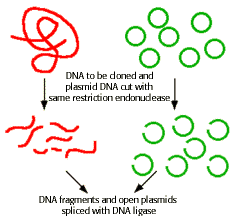
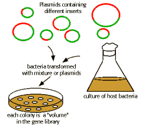

Recombinant DNA Technology Problem Set
Problem 9: Recombinant DNA 4
Tutorial to help answer the question
| "Gene library" is a term used to describe: |
Tutorial
Gene library
|
When the genomic DNA is digested by a restriction endonuclease, and all fragments cloned at random into a plasmid vector, then the majority of genetic information will be included in the mixture of bacteria. Cultures of the bacteria, with each containing only a fraction of the genome, collectively contain all the genes and are called a library. |
  |


University of Arizona
Updated: July 15, 1999
Contact the Development Team
http://biology.arizona.edu
All contents copyright © 1996-99. All rights reserved.